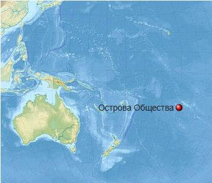
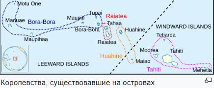

Острова́ О́бщества — группа островов в Тихом океане. Это тропический архипелаг вулканического происхождения, который находится на западе Французской Полинезии. Площадь — 1593 км².   Первым европейцем, увидевшим острова Общества, был голландский мореплаватель Якоб Роггевен, который 6 июня 1722 г. проплыл рядом с Бора-Бора и Маупити. Роггевен ошибочно принял их за острова архипелага Тонга, которые посетил в 1616 г. Якоб Лемер. В 1767 г. британская экспедиция под руководством Самюэла Уоллиса открыла острова Мехетиа (17 июня), Таити (18 июня), Муреа (27 июля), Маупихаа (29 июля) и Моту-Оне (29 июля). Уоллис сделал пятинедельную остановку на Таити. Первая экспедиция Джеймса Кука посетила Таити в 1769 г. для наблюдения за прохождением Венеры. Кук открыл Хуахине, Раиатеа, Тахаа, Тупаи, и Тетиароа. Изначально Кук назвал островами Общества (англ. Society Islands) только Подветренные острова, в честь Лондонского королевского общества, финансировавшего экспедицию. Позднее название стало использоваться для всего архипелага. В 1788—1880 г. на островах существовало полинезийское государство Королевство Таити, которое потом (1842—1880 годы) было французским протекторатом, а после 1880 г. — колонией Франции. Архипелаг включает два административных подразделения: Наветренные и Подветренные острова, которые делятся на 20 коммун (13 — Наветренные и 7 — Подветренные острова). Главным островом островов Общества является Таити, на котором живут 70 % всего населения и где расположена столица Французской Полинезии Папеэте. Основное количество жителей сосредоточено в прибрежных регионах.